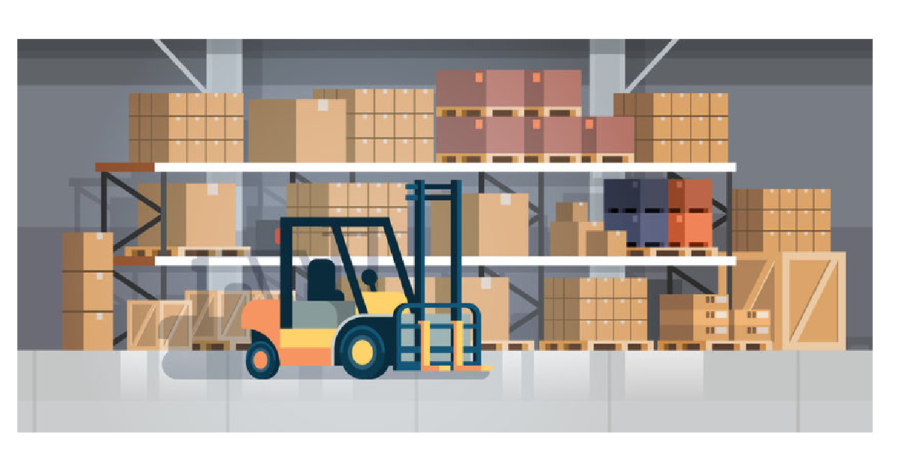

Project Overview
This project involved improving an existing automated database and table system to enhance
Warehouse Management System (WMS) workflows. The goal was to reduce operational complexity,
minimize human error, and bridge the gap between experienced and new warehouse staff by
consolidating multiple inventory tables into a single, intuitive view.
My Role & Contributions
- Communicated system improvement ideas to a third-party WMS company.
- Tested newly implemented tables and reported bugs and edge cases.
- Collaborated with WMS developers on restructuring inventory tables and SQL-based changes.
- Trained staff on how to use the new table effectively, including workflow tips and best practices.
- Applying my SQL Knowledge and experience
Technologies & Skills Used
- SQL (assisted and reviewed database adjustments)
- Data Analysis
- Process Improvement
- Technical Communication
- Problem Solving and Ideas
- Logistics & Warehouse Operations
Key Outcomes
Primary Impact: One computer can now handle the workload of two forklift operators, or a single forklift operator can complete the computer tasks themselves—effectively doubling operational efficiency.
- Consolidated System: Merged three separate inventory tables into a single, unified view.
- Reduced Errors: Eliminated team collisions and missed customer items.
- Faster Onboarding: Reduced training time and minimized skill gaps between experienced and new staff.
- Improved Accuracy: Instant refresh validation and real-time data synchronization increased inventory confidence.
- Better Decision-Making: Enabled data-driven insights for warehouse management and planning.
Problem Statement
The warehouse relied on three separate database tables that had to be cross-referenced simultaneously:
- Inventory pallet contents (what items are where)
- Collection status (items picked and ready)
- Customer order tracking (item locations for the day)
This fragmented system was inherently error-prone. Staff had to mentally consolidate data across three views, increasing cognitive load and error risk. Even a single mistake could cause cascading delays during high-volume operations.
Solution & Approach
I identified this inefficiency on the warehouse floor and proposed a solution to my supervisor, who connected me with the WMS development team. Working directly with WMS developers, we architected a single, unified table that consolidated all three functions into one intuitive view.
My approach:
- Mapped all variables and their dependencies to understand the complete data landscape
- Identified essential vs. redundant data to reduce cognitive load
- Designed table consolidation strategy while maintaining data integrity
- Managed tight deadlines through effective communication (technical documentation, phone calls, detailed PDFs)
Validation & Iteration
The initial implementation significantly improved speed—staff could instantly locate items without manual cross-referencing. However, testing revealed a critical issue: the table was static, updated only by warehouse input, not external orders.
By analyzing missing item patterns, I identified the root cause: order date misalignment between systems. I collaborated with the WMS developer to implement dynamic synchronization, resolving the issue completely.
Results
- Processing speed improved dramatically—staff and forklifts worked in sync without bottlenecks
- Error rate dropped significantly due to single-source-of-truth design
- Operational flexibility increased: the system scaled seamlessly across different team sizes and workflows
Technical Documentation
Below is the detailed technical analysis and recommendations I provided to the WMS development team: